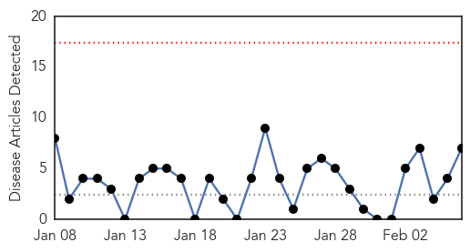

Swine Flu
30-Day Web Trend
13 alerts, 5 warnings

30-Day Twitter Trend
0 alerts, 0 warnings

Article Locations

Article Confidences
Top Articles:
- 0.999
- Swine flu claims one more in city
- 0.998
- Swine Flu Cases Surge to 31 in Lucknow
- 0.997
- Indian authorities step up measures to battle swine flu, Video Gallery
- 0.996
- Swine flu claims two more lives in Telangana, toll 41
- 0.996
- Czech Republic on brink of nationwide flu epidemic as vaccine proves largely ineffective
- 0.996
- Swine flu claims two more lives in Telangana, toll 41
- 0.994
- 2 private labs in the dock for illegal H1N1 tests
- 0.983
- TN Government Appeals Not to Panic on Spread of Swine Flu, Dengue
- 0.981
- No case of swine flu in city, VMC Commissioner
- 0.978
- 2 architecture school students test positive for swine flu in Bhopal
- 0.973
- 58-yr-old dies of swine flu in Mumbai; toll in Maharashtra rises to 33
- 0.967
- Ahmedabad's pvt hospitals told to get 20% more beds for swine flu cases
- 0.958
- Health Min Walked Past a Dead Man, Not a Dying Man on Our Premises, Says OGH
- 0.954
- Stone Hearted? Minister Walks Past Dying Man During Hospital Visit
- 0.952
- Vashi civic hospital ready to treat swine flu, Nerul next
- 0.915
- Hoskote woman dies of H1N1 at City hospital
- 0.908
- Media could focus not just on Delhi elections but swine flu
- 0.849
- Six suspected cases of swine flu in Agra
- 0.724
- Health Ministry reviews preparedness of Odisha, Gujarat, Rajasthan, Maharashtra, Punjab, Tamil Nadu, other states affected by H1N1, Odisha Current News, Odisha Latest Headlines
- 0.719
- Health Ministry Reviews Swine Flu Situation
- 0.699
- Health ministry reviews swine flu situation
Top Tweets:
-
No tweets found for Feb 06, 2015
Meningitis
30-Day Web Trend
0 alerts, 0 warnings

30-Day Twitter Trend
0 alerts, 0 warnings

Article Locations
Article Confidences

Top Articles:
- 0.962
- Providence College: Probable 2nd meningococcal meningitis case
- 0.942
- Yale student hospitalized with probable bacterial meningitis
- 0.912
- Meningitis information sent to Island doctors, clinics
- 0.887
- Yale student admitted to hospital with probable bacterial mening
- 0.690
- Meningitis at Guilford College: Viral or bacterial?
- 0.661
- Health officials say 2nd college student may have meningitis
- 0.609
- Letter: Women have a voice in meningitis vaccine
Top Tweets:
-
No tweets found for Feb 06, 2015